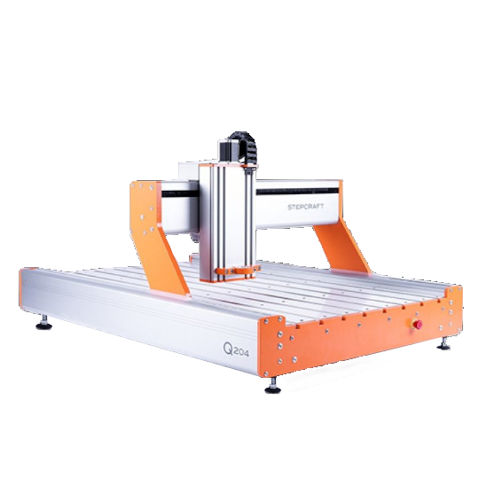

Laser
Thunder Laser je vhodný pro širokou škálu projektů. Na laseru je možné řezat i gravírovat např. papír, dřevo, překližku, textil, kůži, korek, plexisklo a další. Pracovní plocha má rozměry 900 × 600 mm, výška osy Z je až 230 mm. Lze pracovat v rastrovém, vektorovém i kombinovaném módu.
3D Tisk
Disponujeme tiskárnami využívající technolgií SLS, SLA a FDM. Celkem se v prostoru laboratoře nachází 10 tiskáren z nichž nejzastoupenější je Original Prusa i3 MK3S+, který je vhodný na veškerý FDM tisk. Pracovní prostor MK3S+ je 250×210×210 mm. Pokud je potřeba větší pracovní plocha je možné využít Trilab DeltiQ Plus nebo Creality CR-10 Max.
Vyšívání

Brother INNOV-is V5LE je nejmodernější šicí, vyšívací a quiltovací stroj. Má 3 velikosti vyšívacích ploch, největší je 300 x 200 mm. Data lze připravit v PE – Design, zpracovává jak vektorovou grafiku, tak i formáty .png a .jpeg. Mimo vyšívání má i režim ručního šití.
CNC
CNC obráběcí centrum s pevným pracovním stolem o rozměrech pracovní plochy 800 x 1477 x 145 mm. Systém je určen pro přesné, efektivní obrábění široké škály materiálů na bázi dřeva, plastů, textilu, hliníku, mosazi, uhlíkových kompozitů, sendvičových desek, pěnových materiálů a dalších.
3D Sken
RangeVision Spectrum je víceúčelový 3D skener se skenovacím softwarem ScanCenter NG. EinScan Pro 2X Plus je přenosný a univerzální ruční 3D scanner pro výsledky s vysokým rozlišením (skenovací software EXSCAN PRO, 3D skenování objektů od 1 cm do 3 m)
Ostatní

Máme také další ruzné nářadí a to kladiva, svěráky, paličky, štípačky, kombinačky, šroubováky, klíče, ráčny, voříšky, páčidla, sklíčidla, bity, nůžky, měřidla, úhelníky, pinzety, zkoušečky, a také pily, nože, závitníky, dláta, vrtáky, sponkovačky, sekáče, vyražeče, nůžky, jehly, rašple, pilníky, kartáče, a v neposlední řadě vrtačky, pily, brusky, frézky, horkovzdušné i lepicí pistole, svítidla.